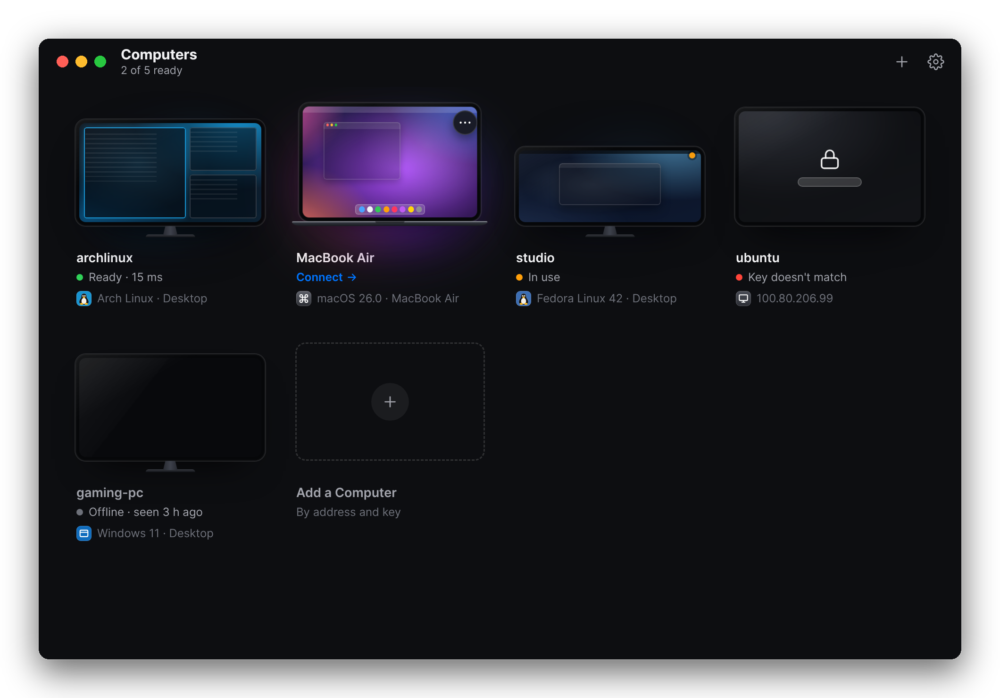
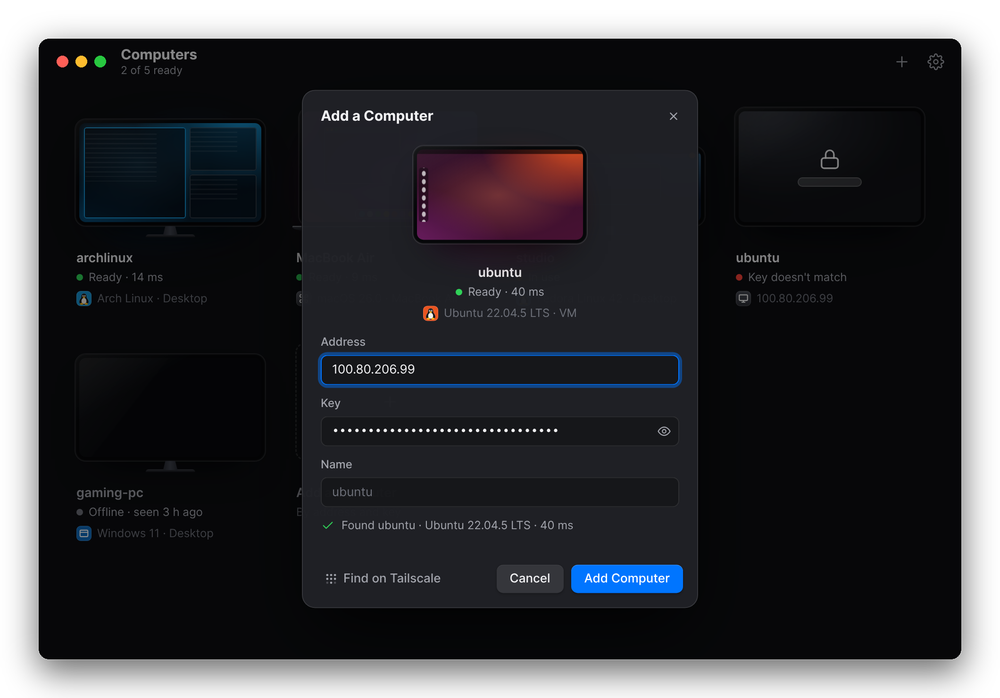
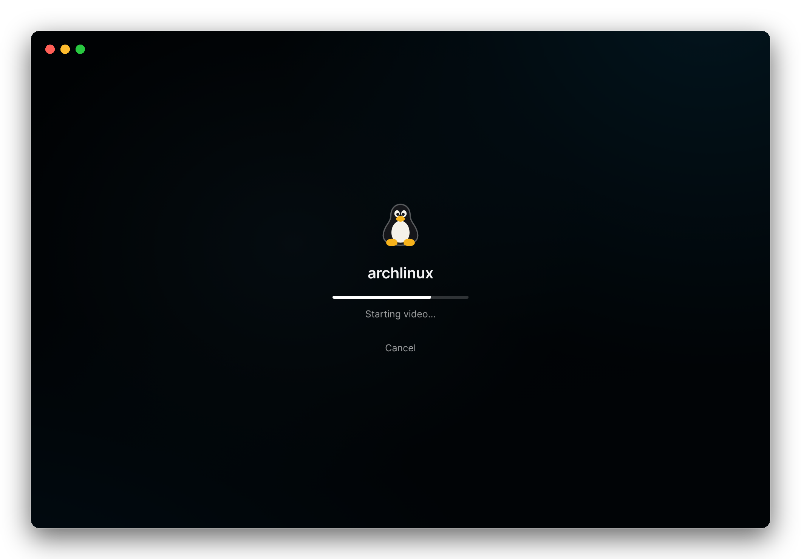

Your other computers,
on your Mac.
Sunna is a fast, native remote desktop for Mac and Linux. It connects straight to your own computers, with no accounts and no cloud service.
The app runs on macOS 13 or later. It connects to Macs and Linux computers.

Add a computer by its address and key.
Type the address and key, or paste the link the computer printed when you shared it. The preview lights up as soon as the computer answers, with its name, its system and the round trip in milliseconds.
Sunna never scans your network on its own. If you use Tailscale, Find on Tailscale lists the computers on your tailnet that are sharing.

Click, and you're there.
The computer's screen grows to fill the window and the session opens full screen, in a native window: smooth trackpad scrolling, your ⌘ shortcuts sent across, and the clipboard shared both ways, text and images.
⌃⌥M opens the session menu: shortcuts for the other computer's system, video settings, and a way to type your clipboard into password prompts that won't take a paste.

Typing that keeps up.
Video takes time to encode, most of all on a computer without a supported GPU. So Sunna also sends small changes, like the letter you just typed, as exact image tiles on a lane of their own, ahead of the video.
Details
- Video
- HEVC or H.264, encoded by the Mac's media engine, an NVIDIA GPU (GTX 10-series or newer, driver 530+) or the CPU, and decoded by your Mac's. The bitrate follows your network.
- Fast lane
- Small changes sent as lossless tiles ahead of the video. On by default for Linux hosts that encode on the CPU.
- Network
- QUIC over UDP port 48800, encrypted with TLS 1.3. Computers connect to each other directly; Tailscale recommended.
- Input
- Keyboard, mouse and trackpad. ⌘Tab and other system shortcuts go to the other computer once Sunna has Accessibility access.
- Clipboard
- Text and images, both ways. One click turns it off for a session.
- Share
- Macs with macOS 13 or later. Linux PCs and servers with an X11 desktop, or a virtual desktop running Plasma or XFCE.
- View from
- A Mac with macOS 13 or later.
- Privacy
- No accounts and no cloud service. Logs stay on your computers, and keystrokes and clipboard contents are never logged.
- When idle
- With nobody connected, a host uses no CPU and keeps one UDP port open.
Install
The install scripts build Sunna on your own computer in a few minutes; there are no prebuilt downloads yet. Each one needs Rust, plus the tools its step names.
Share a Linux computer
Ubuntu, Debian, Arch, Fedora and others. It installs for your user, with no root needed, then shares the X11 desktop you're logged into, or a separate virtual desktop on servers and on machines whose desktop is Wayland. It starts by itself from then on.
It also needs a C/C++ compiler and nasm: sudo apt install build-essential nasm on Debian and Ubuntu; elsewhere the script names the packages. On Debian and Ubuntu you can make a package instead: scripts/package-linux-deb.sh.
git clone https://github.com/SunnyXdm/sunna.git
cd sunna
scripts/install-host-linux.shShare a Mac
For now a Mac host runs in a Terminal window. Put a long random key in ~/.sunna/dogfood.env as SUNNA_TOKEN=…, then run the host. The first time, macOS asks to give your terminal Screen Recording and Accessibility access.
git clone https://github.com/SunnyXdm/sunna.git
cd sunna
scripts/dogfood.sh hostInstall the app on your Mac
It builds Sunna.app, puts it in Applications and opens it. Run it again to update.
It also needs the Xcode command line tools: xcode-select --install.
git clone https://github.com/SunnyXdm/sunna.git
cd sunna
scripts/install-mac-app.shAdd the computer
Sharing prints the computer's address, key and link. In Sunna, choose Add a Computer (⌘N) and paste the link. On Linux, sunna-host link shows it again.
Address 100.101.102.103
Key 7f3a…
In the Sunna app, choose Add a Computer and paste:
sunna://100.101.102.103?key=7f3a…Questions
Is it secure?
A computer only accepts viewers that present its key, and connections are encrypted (QUIC with TLS 1.3). The app doesn't check the host's identity yet, though, so use Sunna over Tailscale or a network you trust, and never expose a host to the internet. Checking each host's certificate is planned.
Can I share a Wayland desktop?
Not yet. That includes Ubuntu's default session, and GNOME, Plasma or Hyprland on Wayland. Log in with an X11 session (on Ubuntu, "Ubuntu on Xorg"), or share a virtual desktop instead. Wayland support is planned.
What about Windows, or viewing from Linux?
Neither is ready. Sunna shares Macs and Linux computers, and the app runs on macOS.
How fast is it?
It depends on your network and on how the host encodes video: Apple's media engine and NVIDIA GPUs are quick, a CPU is slower, and the fast lane keeps typing quick either way. In a session, ⌃⌥S shows the stats bar with the latency, frame rate and bitrate of your own setup.
Does it use my computer when nobody's connected?
A waiting host uses no CPU and keeps one UDP port open. A virtual desktop keeps running with the apps you opened in it, like a real computer would; sunna-host desktop-stop stops it.
Why isn't there a download?
Prebuilt downloads aren't published yet. Until they are, the install scripts build Sunna on your own computer, which takes a few minutes.